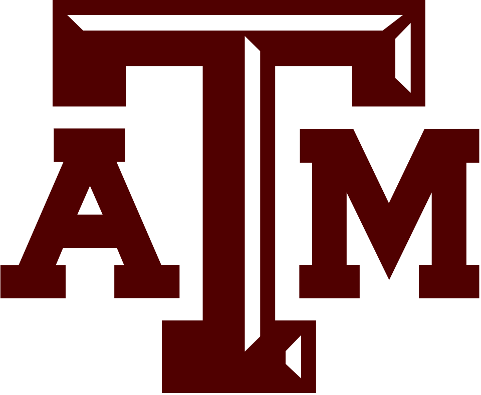
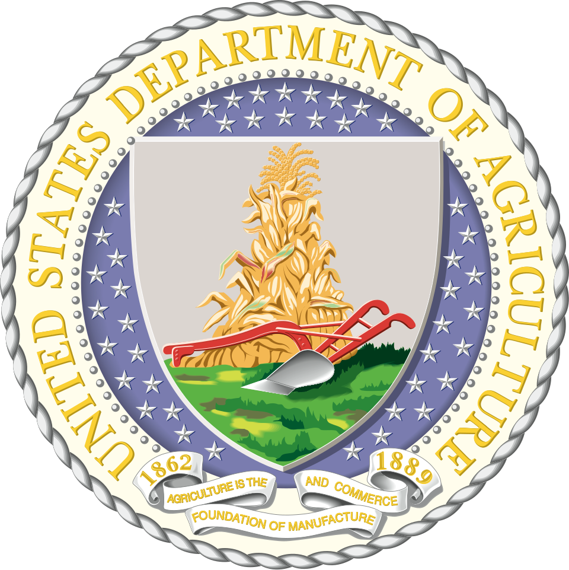
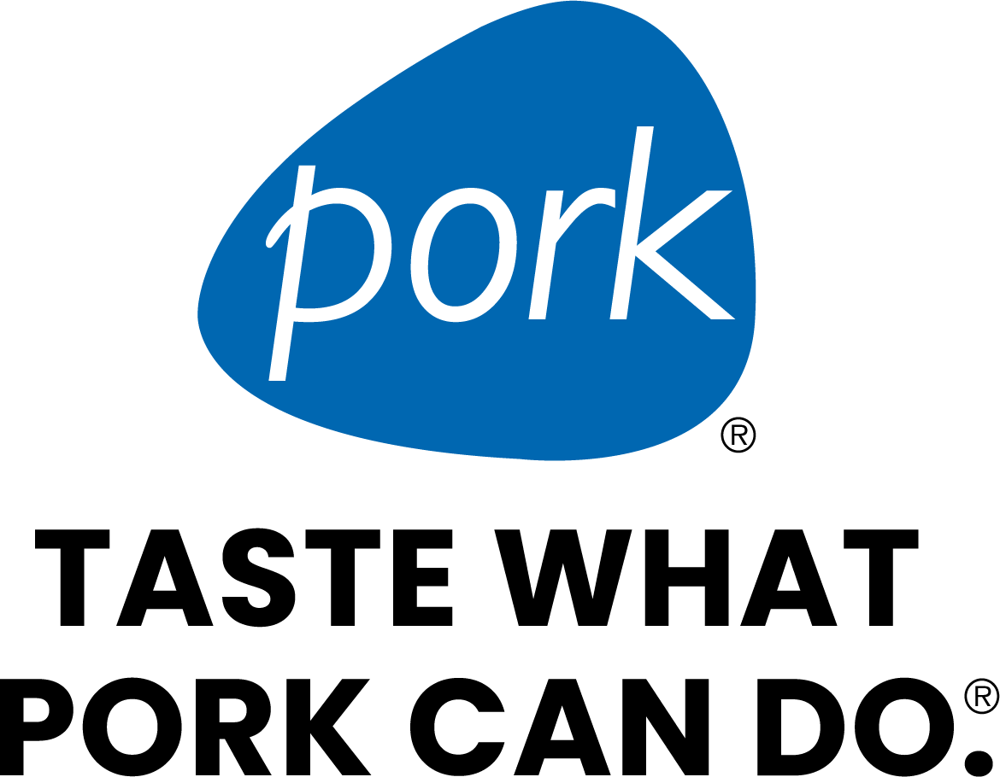
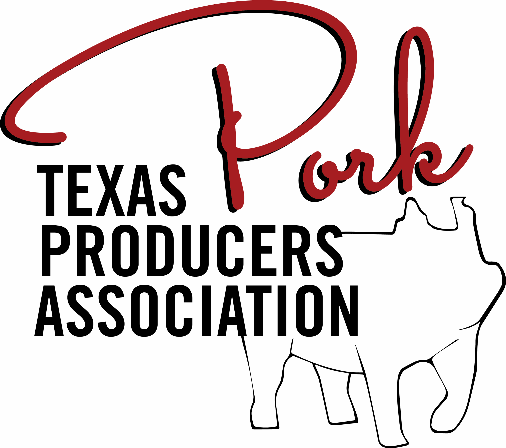
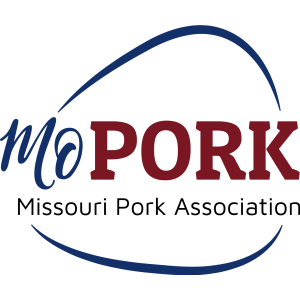

VISION
A farrowing room where nothing dies unseen
Every crate watched through every farrowing, every roll of the sow and every stalled birth caught while it can still be undone — on any farm, not just the ones that can afford a night crew.
SMART SWINE, LLC · COLLEGE STATION, TX
Smart Swine builds camera intelligence for the farrowing room — starting with SPM-01, a sealed dual-axis monitor that watches the sow and her litter through the most dangerous week of a pig's life.
WHY WE EXIST
The deaths that empty a farrowing room are visible events with short windows — and no stockperson can stand at the right crate at the right moment, every time, all night. That is a supervision gap, not a biology problem, and supervision is exactly what a camera is for. We build the camera.
VISION
Every crate watched through every farrowing, every roll of the sow and every stalled birth caught while it can still be undone — on any farm, not just the ones that can afford a night crew.
MISSION
Build affordable, washdown-proof perception for the farrowing crate, turn what it sees into alerts a herd team can act on, and price it inside the value of the piglets it saves.
WHERE WE ARE
Smart Swine grew out of Texas A&M — sensing research, an on-farm trial and a venture program, in that order. The hardware is a farm-validated prototype moving toward production design; the first paid pilots are the next milestone.
THE TEAM
Robotics, computer vision and animal science — everything a crate-mounted sensor needs to be built, trained and trusted, in one team.
Robotics & Automation
Builds the machine: the dual-axis sensing hardware, the crate-mount system and the edge stack that runs it — from CAD to the farrowing room.
Computer Vision
Builds the eyes: the models that read sow posture, respiration and the lateral roll, and tell a newborn from a stillborn in the landing zone.
Animal Science
Keeps it honest to the animal: sow and piglet biology, on-farm trial protocols and the producer studies that shape what we build.
Domain experts who keep the engineering, the agronomy and the business honest.
Bioengineering Scientist
Assistant Professor, Texas A&M University — smart technologies for livestock production, machine learning and robotics.
Business Strategy
Clinical Professor and Director, M.S. in Entrepreneurial Leadership, Mays Business School, Texas A&M University.
Agricultural Engineering Scientist
Associate Professor, University of Missouri — precision livestock farming and agricultural sensing.
PARTNERS & SUPPORT
University research partners, the federal programs behind our non-dilutive support, and the pork-industry organizations that opened doors to producers.






Pork-industry organizations provided letters of support and helped distribute our producer survey. They are not investors, customers or commercial partners. NSF and USDA-NIFA are listed as sources of non-dilutive grant support, not as endorsements.
Pilot slots for 2026 farrowing rooms are open — one room, one batch, your own morning brief.